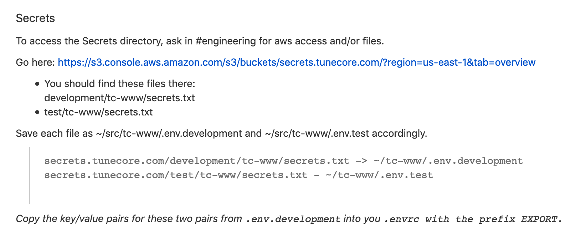

env.development.docker
U2FsdGVkX1/AXl5lF6RJAFjkt4W9oKdqB
Vk04Ni/47fAUyI8CxVzwD1vFlFb2pKD+j
CTUWfkATxXQrgl4DB2ocHq3fDXX4mSjio
azOQ1dbZNg35A/aDnBOC42fvnq88rAgWI
qApUSKkz8glKubVpo48t17TqVmoj6rfGc
⬇
RAILS_ENV=development
ACTION_MAILER_HOST=localhost
ACTION_MAILER_PORT=25
ACTION_MAILER_DOMAIN=tunecore.com
AIRBRAKE_PROJECT_ID=111111111
- .envrc
- env.development.docker
- env.development.local
- env.test.docker
- env.test.local
.gitattributes
#pattern filter=crypt diff=crypt
env.*.* filter=crypt diff=crypt
.envrc filter=crypt diff=crypt
script/switch_to_local
cp env.test.local .env.test
cp env.development.local .env.development
script/switch_to_docker
cp env.test.docker .env.test
cp env.development.docker .env.development
Gemfile
gem 'dotenv-rails', require: 'dotenv/rails-now'
.gitignore
.env.*
- - How to add a new variable?
docker/pull_secrets.sh
pull_secrets() {
if [ "$1" == "development" ] || [ "$1" == "test" ]; then
BUCKET=secrets-dev
fi
if [ "$1" == "staging" ] || [ "$1" == "production" ]; then
BUCKET=secrets
fi
aws s3 cp s3://$BUCKET.tunecore.com/$1/tc-www/secrets.txt \
tmp/secrets.txt.$1
}
pull_secrets "development"
pull_secrets "test"
pull_secrets "staging"
pull_secrets "production"
- - How could I miss this in my setup?
- - Where is the rest of this process?
Removed on 02/07/2019

| 08/01/2019 |
Dan setup the new system |
| 14/03/2019 |
Vagmi add a new variable in the old system |
| 17/06/2019 |
Toktam merge Dan's new system |
| 01/07/2019 |
Ian remove references to old system in docs |
| 08/07/2019 |
Rémy starts onboarding |
- - Are other variables lost in translation?
- - How do we add a variable in the new system?
- - Is the new system complete?